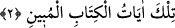
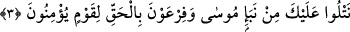
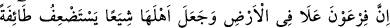
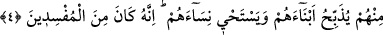

ruhlarının mâsivâya muhabbetten ve muvahhidlerin sırlarının Allah’tan başkasını
görmekten temizlenmesine işârettir. Sülemî der ki: “Sîn”, âsîlerin necat bulacağına,
mutî ve itâatkâr kulların dereceler elde edeceğine, muhibbânın münâcât ve meramlarının
devamına dâir ilâhî sırlardan semboldür. İmam Yâfi’î der ki: Hak sübhânehû ve teâlâ
hazretleri, fazla ve eksik işâretlerin birbiri ardına gitmemesi için bu harfleri Kur’ân’ın
muhâfazasına sebep kılmıştır. “Ve innâ lehû le-hâfızûn/onun muhâfızı biziz” âyetinde
işâret edilen sır bu harflerdir. Nitekim Tefsîru’l-Kâşifî’de bu şekilde yorumlanmıştır.
Bunlardan başka daha pekçok latîf mânâlar ve gizli işâretler, Şuâra sûresinin başında
geniş şekilde ele alınmıştı. Oraya mürâcât et, fazlasıyla istifâde edersin.
2. Bunlar, apaçık Kitab’ın âyetleridir.
“Bunlar,” yâni bu sure “apaçık Kitab’ın âyetleridir.” Yâni icâzı âşikâr olan
Kur’an’ın belli âyetleridir.
3. Îman eden bir kavim için (faydalı olmak üzere) Mûsâ ile Firavun’un haberinden
bir kısmını sana gerçek şekliyle nakledeceğiz.
“Îman eden bir kavim için Mûsâ ile Firavun’un haberinden” önemi ve özelliği olan
“bir kısmını sana gerçek şekliyle” yani, yalanın asla câiz ve mümkün olmadığı hak ve
gerçek olarak “nakledeceğiz.” Yâni biz Kur’ân’ı sana Cebrâil vâsıtasıyla okuyoruz;
diğer bir ifâdeyle Cebrâil, bizim emrimizle sana okuyor, demektir.
“Tilâvet”, peşpeşe ve ard arda Kur’ân âyetlerini okumak demektir.
Dâvet ve beyânın umûmi olup herkesi içine aldığı halde “Îman eden bir kavim için”
şeklinde tahsis olunmasının sebep ve hikmeti, bundan sadece müminlerin istifâde
edecek olmalarıdır.
Bundan sonra gelen âyet mukadder bir sorunun cevabı niteliğinde olup sanki birisi
şöyle demiştir: “Mûsâ ve Firavun’un haberi nasıldır, nedir?” Buna cevaben Allah Teâlâ
şöyle buyurmuştur: